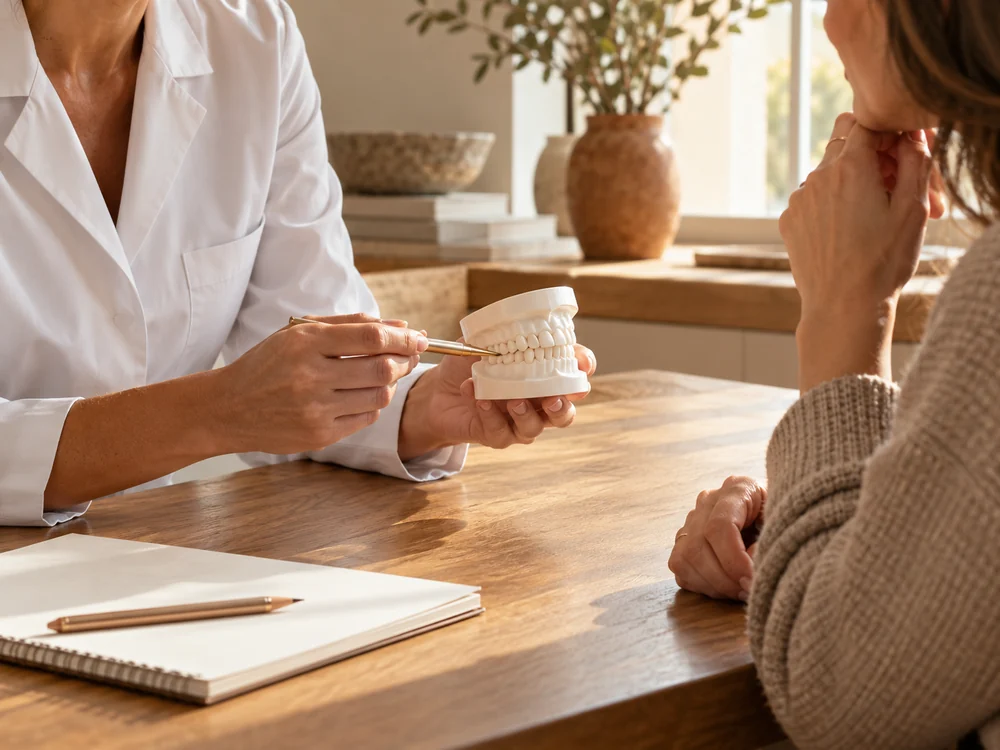

Your first visit, with a little less unknown.
A simple guide to making room for questions before your first dental appointment.
Read storyA little clarity. A little confidence.
Good conversations begin with a little understanding. Find a fresh perspective on your next visit.
Explore the storiesYour thoughts, preferences and questions have a place in the room. A little preparation can help you make the most of that conversation.
The reading collection
A simple guide to making room for questions before your first dental appointment.
Read storyA good conversation leaves space for the practical details.
Read storyIt helps to say what would make an appointment feel easier.
Read story
What to ask when the next steps are on the table.
Read storyA little organisation can make a shared visit feel simpler.
Read storyStart with what matters to you, then explore the possibilities.
Read storyNo stories match your search. Try another phrase or category.
Take what resonates. Bring what matters.
The best questions are often your own.